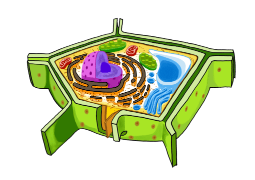

La célula vegetal
La célula vegetal

Nota. Gráfica tomada de: https://es.pngtree.com/free-png-vectors/c%C3%A9lulas-vegetales
La célula vegetal es el tipo de célula que se encuentra en las plantas. Su estructura general y funcionamiento es similar al de la célula animal, porque ambas son células eucariotas (tienen núcleo verdadero y compartimientos internos). Sin embargo, la célula vegetal tiene algunas características especiales. Por ejemplo, cuenta con una gruesa pared celular que recubre la parte más externa (que sirve de protección y sostén) y un citoplasma particular, con estructuras pigmentadas llamadas cloroplastos.
No te olvides que siempre dejaremos enlaces y videos para reforzar tus aprendizajes, que son completamente funcionales.